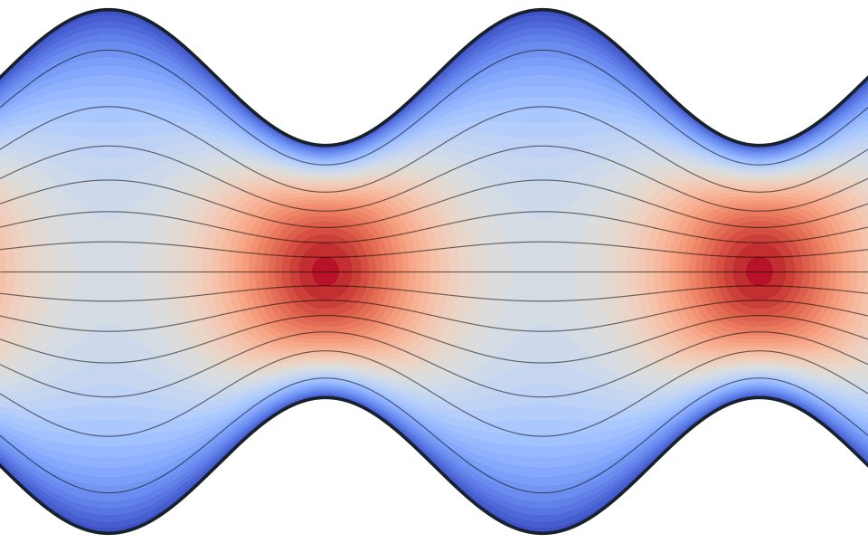
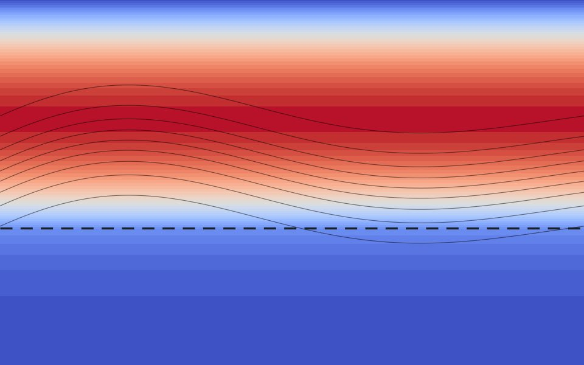

Numerical analysis · Nonlinear PDEs
Shahid Hasnain, PhD
Computational Applied Mathematician
Accurate numerical methods for biomedical and fluid-flow problems.
Focus
What I work on
How does synovial fluid lubricate and feed the cartilage of the knee? How do tumours and biological patterns spread?
My work translates such biomedical questions into coupled nonlinear PDE models and solves them with in-house finite-difference and finite-volume solvers, underpinned by rigorous stability and convergence analysis.
- Methods
- Finite difference methods
- High-order compact schemes
- Implicit & operator-splitting time integration
- Structured finite volume methods
- Incompressible flow solvers (SIMPLE / PISO)
- Numerical analysis & code verification
- Scientific computing in Python & MATLAB
- Finite element methods · emerging
- Applications
- Synovial joint lubrication & biomechanics
- Heat & nutrient transport in biological tissue
- Flow in porous media (Brinkman–Darcy)
- Biological pattern formation (reaction–diffusion)
- Nanofluid convection & heat transfer
- Neural signal propagation
- Tumour growth modelling
At a glance
In numbers
Publication and citation figures from Google Scholar, August 2026.
Featured
Selected research

Scientific Reports · 2026
Magneto-nanolubricant transport through a porous wavy channel
How a magnetic field and nanoparticles change lubricant flow in a porous wavy channel, compared across three non-Newtonian models.
Int. Comm. Heat & Mass Transfer · 2025
Modelling joint dynamics and pain pathways
A numerical study that links the mechanics of the joint with the signalling pathways of pain.

Int. J. Thermal Sciences · 2025
Energy and flow in knee-joint synovial fluid
Flow and heat transfer of synovial fluid over porous cartilage, modelled with the Brinkman equations.
Services
How I can help
Institutions
Where I have studied and worked
- King Abdulaziz University
- Linköping University
- Quaid-i-Azam University
- University of Chakwal
- Air University
- PIEAS
- Muhammad Ali Jinnah University (CUST)
Looking for a researcher, teacher or collaborator?
I welcome enquiries about postdoctoral and faculty positions, research collaboration, invited talks and teaching.